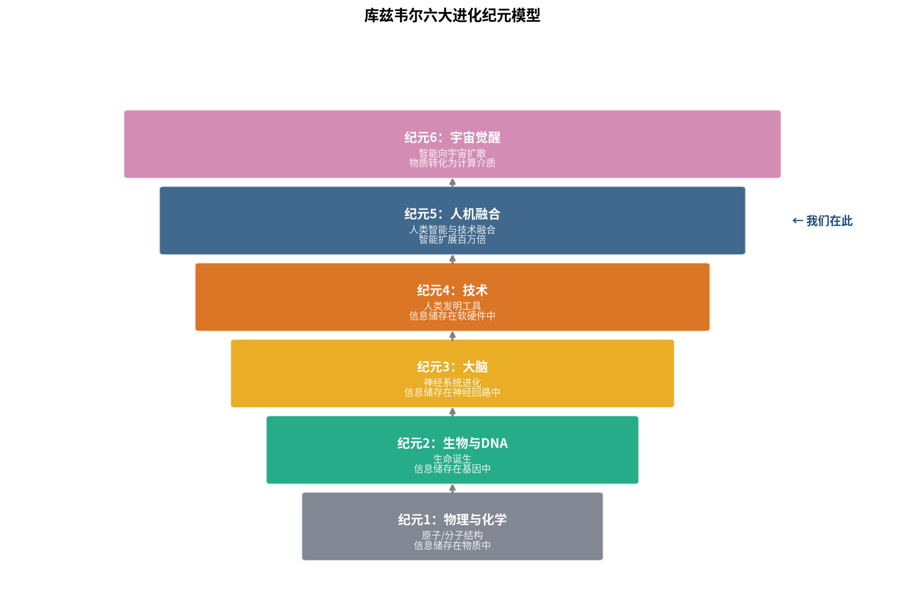
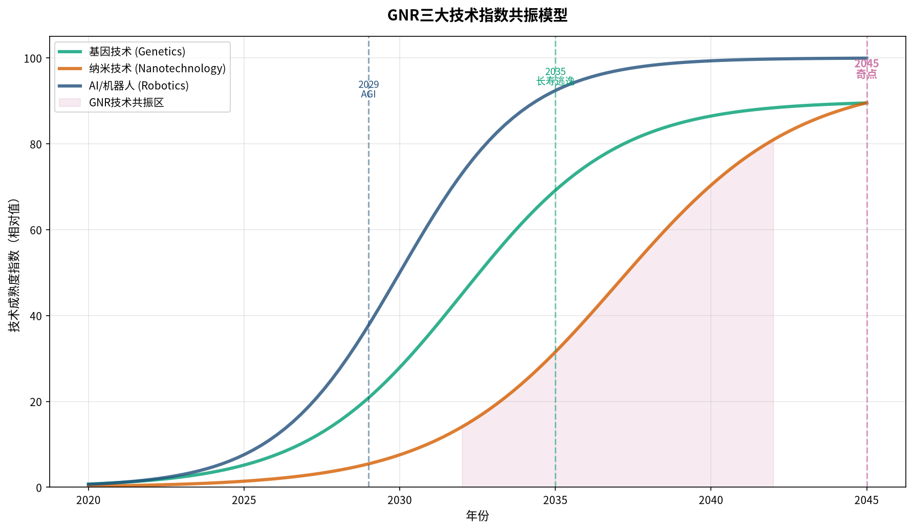
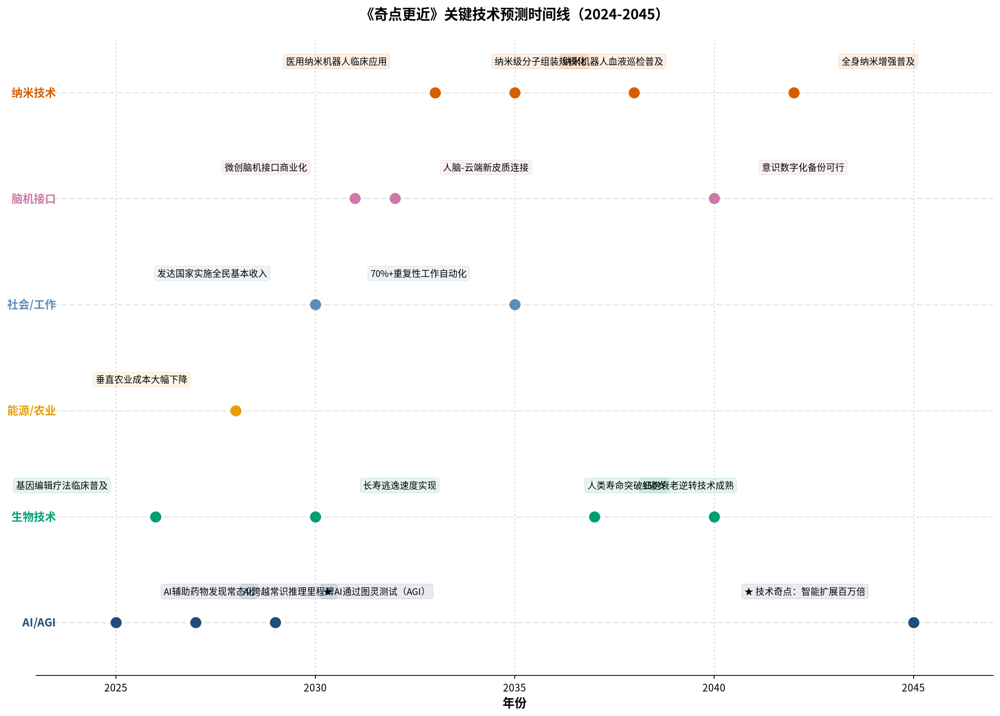

未来20年的人工智能神预测
雷·库兹韦尔在《奇点更近》中以"人机融合"为核心叙事重构了奇点理论体系，重申2029年AI通过图灵测试、2045年技术奇点到来的判断，但将论证重心从"机器超越人类"转向"人类与AI深度共生"。过去20年，单位美元计算能力增长了约11,200倍，基因测序成本下降了99.997%，两大核心指标的指数级演进为奇点理论提供了坚实的现实支撑。
本书的最大价值不在于预测的精确性，而在于提供了一套从宇宙演化到技术迭代的统一思考框架——加速回报定律、六大纪元、GNR技术共振——帮助技术管理者跳出线性思维陷阱。对于网络与IT基础设施领域而言，2030年代的人脑-云端连接、纳米机器人体内网络、AI原生自组织网络将成为颠覆性的技术拐点。
从摩尔定律拓展为覆盖宇宙演化、生物DNA、全部信息科技的普适进化规律，正向反馈闭环驱动指数增长。
从物理化学→生物DNA→大脑→技术→人机融合→宇宙觉醒，信息处理效率持续数量级跃升的连续曲线。
基因技术、纳米技术、人工智能三大领域互相赋能交叉渗透，形成"1+1+1>3"的协同加速效应。
大多数人用线性思维预判未来——"未来十年的变化和过去十年差不多"。但加速回报定律告诉我们：信息技术的增长是指数级的，越往后越快。过去20年单位美元计算力增长了11,200倍，而我们刚刚拐过指数曲线的"膝盖弯"，接下来的增长会更加陡峭。
人类迈向奇点的千年征程已步入冲刺阶段。指数增长的特点是：前99天只覆盖了水面的1%，大多数人都觉得"还早着呢"，但第100天就铺满了整个池塘。
对于技术管理者而言，这意味着战略规划的时间窗口正在从"十年规划"压缩到"三年迭代"。用过去的经验预判未来，将严重低估变化的幅度。不理解指数思维，就无法为即将到来的技术跃迁做好准备。
六大纪元框架将技术演化视为生物演化的自然延续，赋予"技术奇点"一种近乎宇宙必然性的地位。从原子到DNA，从DNA到神经，从神经到技术，从技术到人机融合——每一次范式跃迁都让信息的存储、传输、处理效率提升几个数量级。

核心洞察是：奇点不是凭空出现的"神迹"，而是138亿年进化曲线自然延伸的结果。人类正处于第四纪元（技术纪元）的末期和第五纪元（人机融合纪元）的起点——2022年大模型落地标志着第五纪元的正式开启。
G、N、R分别代表基因技术（Genetics）、纳米技术（Nanotechnology）和机器人/人工智能（Robotics/AI）。这三大领域都是信息技术的延伸，因此都遵循加速回报定律，但它们之间并非平行发展，而是互相赋能、交叉渗透、协同共振。

对于技术企业和管理者而言，GNR共振模型最重要的启示是：不要孤立地看待某一项技术趋势，要看到不同技术领域之间的交叉融合效应。在网络基础设施领域，AI与网络的融合（AI原生网络）、生物技术与通信的融合（体内纳米网络）、纳米技术与边缘计算的融合——这些交叉点往往是颠覆性创新的来源。
全书分为两大部分、六章，加上引言、结语和两个附录，呈现"理论奠基—现实推演—风险审视"的三层递进结构。以下为6个核心章节的要点提炼。
六大进化纪元框架，从宇宙大爆炸到宇宙觉醒。人类正处于第四纪元末期、第五纪元起点。范式转移的S曲线规律：单一技术有S曲线，但新范式持续接棒保证指数增长不中断。
AI两大流派（符号主义vs连接主义）的历史脉络。大脑计算原理：小脑与新皮质。深度学习本质是新皮质魔力的数字化再现。AI尚需跨越的三大里程碑：情绪记忆、常识推理、社交互动。
意识难题与哲学僵尸思想实验。自由意志的困境。"2号你是你吗"的身份悖论。数字来生技术：基于赛博空间信息+DNA重建人格。身份认同的核心是信息模式而非物质构成。
反驳"世界越来越糟"的认知偏差：新闻负面偏见+大脑负面偏差。数据证明贫困减少、暴力下降、健康改善。长寿逃逸速度（LEV）概念：医学进步速度超过衰老速度。垂直农业、可再生能源的指数级改善。
三次技术失业浪潮：去技能化→技能提升→无需技能。超过一半的职业在2030年代初自动化概率大于50%。但历史每次都消灭旧工作、创造新工作。工作本质从"为了生存"转向"为了意义"。最终不是与AI竞争，而是与AI融合。
通往长寿的四座桥梁：健康寿命延长→AI-生物技术革命→纳米医学→数字备份。2020年代是AI+生物技术，2030-40年代是纳米技术完善。长寿逃逸速度预计2030年左右到来。纳米机器人血液巡检、细胞衰老逆转、全身纳米增强。
AI大模型训练算力每代增长10-100倍，推动数据中心从三层架构转向叶脊架构，再向AI集群专用网络演进。RDMA、无损以太网、智能网卡（SmartNIC/DPU）成为标配。电力和冷却能力正在成为数据中心扩建的主要限制因素，推动液冷、光互联、近内存计算等技术发展。
当大脑直接连接云端AI时，网络延迟不再是"影响体验"的问题，而是"影响思维连贯性"的问题。要让云端AI感觉像"自己思维的一部分"，端到端延迟可能需要控制在几十毫秒以内。光速的物理天花板决定了计算资源必须下沉——每个城市、每个社区都需要边缘计算节点。市场重心将从"核心网"向"边缘网"结构性转移。
网络设计思路从"工程师编写规则"转向"AI自学习自优化"。智能流量调度、自修复自愈能力、预测性维护、AI安全防御——网络的控制面、数据面、管理面都将深度AI化。产品竞争力从硬件参数转向软件和AI能力。安全范式从"防火墙边界防御"转向"分布式免疫系统"。

正因为它如此有影响力、如此有启发性，才需要被认真审视和批判。库兹韦尔的价值不在于他预测的每一个细节都是对的——这不可能——而在于他提供了一套完整的思考框架，迫使我们去认真思考技术的未来。
《奇点更近》不是一本"预测未来"的书，而是一本升级思维方式的书。它的核心价值不在于告诉你2029年或2045年会发生什么，而在于教你用指数思维来看待这个世界。
对于技术管理者来说，这本书最大的启示是：我们已经拐过了指数曲线的拐点，未来20年的变革速度将远超历史任何时期。战略规划的时间窗口在缩短，产品迭代的节奏在加快，技术路线的不确定性在增加。
但与其焦虑"会不会被时代抛弃"，不如思考"如何与时代共舞"。人机融合的时代已经开始，最好的策略不是抗拒，而是学会与AI协作、用AI放大自己的能力、保持持续学习的姿态。